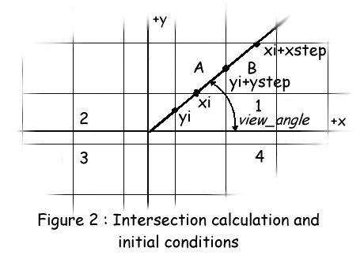

| ECE291 |
Computer Engineering II |
Lockwood, Spring 1998 |
Machine Problem 4: Everitt 3-D
| Due Date |
Friday 4/3/98 |
| Purpose |
VGA Graphics, Interrupts, C/ASM Interface |
| Points |
65 |
Introduction
In 1991, Apogee released Wolfenstein 3-D, a game
designed by a relatively little known game company named id
software. It revolutionized the gaming industry and made id one
of the most popular game companies in the world. The Computer
Gaming World Hall of Fame recognizes it as helping to shape the
overall direction of the computer gaming industry today.
Wolfenstein 3-D brought something new to computer games that
hadn't been seen previously: a 3-D environment with detailed
graphics and addictive gameplay. Over 250,000 copies of
Wolfenstein 3-D have been sold worldwide, and millions of
shareware copies have been played. In this MP, we are going to
create our own version of Wolfenstein 3-D called Everitt
3-D. Four screenshots from this MP are shown below.
The Ray Caster
The 3D game engine works by sending out a ray to
search for objects, such as walls, which are in the line of sight
of the player. The part of the object hit by the ray corresponds
to a vertical image slice centered about the middle of the
screen. The sides of the screen represent the objects seen
in the peripheral vision of the player. In Everitt 3-D, as
in Wolfenstein 3-D, walls are represented by large square blocks.
Each wall block, or cell, contains 64 player positions along each
side. Figure 1 shows the top view of a simple game map. The black
squares represent cells. The player is positioned at (Player_X,
Player_Y) and is facing in the direction of the arrow. Rays
are cast out to find the distance from a wall cell to the viewer.
One ray is cast for each column on the screen. Since we will be
operating in 320X200 graphics mode for this MP, 320 rays are
needed to fill the screen. These rays are divided evenly through
a 60° viewing range, from 30° less than the viewing angle to
30° more than the viewing angle. This range is shown in red on
the figure. When a wall cell has been intersected, the distance
from the viewer to this intersection is calculated.
Finding the Walls
A few initial calculations are needed to find an
intersection with a cell wall. First, the direction of the
view angle is checked to see what quadrant the ray will be
casting in, as shown in Figure 2. This tells the ray caster, the
direction in which to look for wall cells as the ray is cast. For
example, in Quadrant 1, all intersections will be with cells
either above or to the right of the viewer. As with the cartesian
coordinate system, a view_angle of 0 represents a ray cast
out along the positive x-axis with the value of view_angle
increasing as you proceed in a counter-clockwise direction.
The initial value of xi, shown in the figure below,
is the x-position of the first horizontal grid line crossed.
Similarly, the initial yi is the y-position of the first
vertical grid line that is crossed.

Since the ray caster needs to check in both the x
direction and the y direction for intersections with a cell wall,
the calculations are simplified if two rays are cast in the same
direction. One, the yray, checks all intersections with a
wall cell along a horizontal grid line, such as cell A in the
figure. The y-position of the grid line and xi are used to
calculate the distance of a possible wall cell intersection from
the viewer. Subsequent xi's are calculated at each
horizontal grid line by adding a constant value, xstep, to
xi. Xstep represents the increase in xi at
the angle of the current ray for each 64 steps in y, or the
distance between grid lines. If an intersection is not found at
the current grid intersection, meaning the cell in question
contains a zero, then the ray continues to be cast out until an
intersection is found by this or the xray.
The other ray that is cast, the xray, operates in a
very similar manner as the yray, with the only differences
being that instead of checking for intersections along the
horizontal grid lines, here there are checked along the vertical
grid lines. Also, a ystep value is now used to update yi
to calculate the intersections of a vertical grid line with
the yray.
The code for the ray caster has been written for you.
You may find coding your portion of the MP easier, however, if
you understand how the ray caster works and what it is doing.
The World Array
The world is represented as an array of
cells. Each cell has the same texture on all four
sides. For this MP, the world contains 16 types of
cells. A cell type of 0 represents an open space, while
1-15 represent cells covered with different textures.. We
will use one byte for each wall cell. The texture
number is located in the lower four bits. Additional
information about the cell, such as door status data, is
located in the upper four bits. These upper bits should be
ignored when you write WorldValue procedure.
In addition, the array is not arranged the way
you may think it is. Byte 0 in the array does not contain block
(0,0). The world array has been arranged such that the lower left
corner, as it appears in the include file, represents the (0,0)
wall cell position. Therefore, byte 0 in the array ends up
containing block (0, WorldSize - 1) . This makes
creation of the map much easier since the map directions in the
array are intuitive: Right represents a view_angle of 0°,
Up represents 90° , Left represents 180° , Down represents
270° . If the zero position of the
array was used to represent block (0,0), the map would have been
upside down in the include file. The height and width of
the array is determined by the variable WorldSize.
A procedure, CheckDoor, has been defined for you to
detect whether or not you can pass through a particular wall
cell. It has been defined as a C type procedure and takes
three arguments, the X and Y position of the block in the world
array and the function, the check that needs to be
performed. If function = 0, the block if checked to
see if it is a door. For now, you will not need to use this
check in your code. If function = 1, the block is
checked to see if you can walk through it. You should use
this check when writing ProcessMovement. The check
result is returned in ax, 1 if the check is positive, 0 if
not. If you are able to walk through the cell, ax=1 after
calling CheckDoor, treat it as if it were a null cell.
Displaying the results
In order to display a 3-D
representation of the 2-dimensional map, we need to draw one
vertical strip for each ray that was cast. The map array
contains values that indicate what texture should be on the wall
cell. These map values correspond to the textures in the
Background Segment as shown in Figure 3 below. This texture
value is indicated by TexNum. You will need to note here,
however, that while the map may organize the textures from 1 to
15, it would be much easier to calculate the current texture if
the numbers started from 0. This is why the value passed
in, TexNum, always one less than the map texture
value. The strip that is to be drawn, StripNum, is
found by calculating the following: (intersection point mod
64). This value is 0 at the far left of the texture and 63
at the far right.
Scaling the Strips
To represent textures at different distances,
they must be scaled. You need to scale the texture from its
original height of 64 to the final height as indicated by Scale.
Clipping is needed when the strip height is greater
than 200. Strip scaling involves resampling of pixels. It
is easy to reduce the size of a strip by 50%, (just plot one
pixel for every other pixel in the original strip). Likewise, it
is easy to magnify an image by 300% (plot three duplicate pixels
for every pixel in the source). The hard part is working
with scaling factors such as 144% and 295%. Providing
support for these scaling factors is what makes the scaling
algorithm interesting.
You will first need to calculate your scale factor since what
is provided, Scale, will only give you the final height of
the strip. The original height of a texture is 64.
The whole part of the scaling factor, (the multiple number of
times that each pixel of the original strip must always be
displayed in the final strip), can be found by (Scale /
64). The remaining part of the scale factor, (the fraction of
pixels that are to be displayed each time), can be found by (Scale
mod 64). This fractional portion is what allows you to
display strips at all heights. As with Bresenham's
algorithm, as we plot each pixel, we can compute a sum of this
fractional portion. When it reaches the width of a pixel, we
should plot an extra pixel and then subtract a full pixel width
from it. Think about what value the pixel width would need to be
based on the values given here.
Moving Around
Moving straight ahead in our 3-D world is not as
simple as you may think. In order for you to maintain a
consistent travel distance at varying viewing angles, you need to
calculate your Delta_X and Delta_Y values based on
the value of view_angle. You are really just trying
to calculate the sides of a right triangle, as shown in Figure
4. Some basic trigonometry is obviously all that's required
to calculate these delta values correctly. The travel
distance is dependent only on the state of the Left Shift
key. If it is down, you will want to travel a farther
distance than if it was up.
Image Data
It would be tedious to define images using assembly code. It
is much more convenient to create an image using a standard image
editor (such as PhotoPaint) and save the results in a file. Our
program then need only load this data when it executes.
The conents of the Everitt textures are shown below:
For this MP, we will write the LoadPCX routine to open
and read a .PCX file; run-length decode it; then save the
uncompressed data in a memory segment. DOS file services
(software interrupts) are described in the lab manual and in your
textbook. (You will need to open a file, point a register to the
scratch segment, and issue the read command). Details of the PCX
image format were discussed in class in Lecture 22.
Video Graphics
In order to reduce the screen flicker when we draw to the
screen we will use double-buffering. After an entire image has
been created, it will be quickly transferred directly to the
screen by the ShowScreenBuffer routine. Because of double
buffering, you will not see this image while it is being changed.
To hold all the graphics for this MP, the following segments
have been defined:
- SBSeg : A double-buffered
"virtual" screen that holds Screen Buffer.
- BGSeg : Contains the wall textures in
Background.
- FGSeg : Contains the Player/Object
images in Foreground(not needed until MP5).
- ScrSeg : A temporary buffer used to
hold PCX image data during decoding in ScratchPad.
- TextSeg : Contains the text used to display the
frame rate and in MP5
A few steps are required to draw to the video screen. First,
we call ray_caster to draw the strips to represent the
walls. Once an entire image has been created, ShowScreenBuffer
is called to blast the data from ScreenBuffer to the VGA's video
RAM (at A0000h). Before ShowScreenBuffer exits,
you must make sure to clear the ScreenBuffer so that no trace of
the previous image remains.
Keyboard Control
This MP uses the keyboard to control movement.
To recognize keys that are pressed
simultaneously, we need to replace the default keyboard handler
with our own code. Your InstKey routine is called to
install a new handler into the vector table. The DeInstallKey
routine is used to remove it (and restore the DOS default
routine).
Key presses affect special keyboard variables that
we have define for this MP. When
a key is down, the appropriate keyboard variable is set to one.
When the key is released, the same variable is then set back to
zero. The topic of interrupts was discussed in great detail
during the Lecture 14 class
period. We discussed the operation of the keyboard controller
during Lecture 16
Look-Up Tables
In order to optimize the execution speed of the ray caster,
the following look-up tables have been created:
tan_table
: tangent
inv_tan_table :
inverse tangent
y_step
: the change in y if the change in x is 64 at the current view_angle.
x_step
: the change in x if the change in y is 64 at the current view_angle.
inv_cos_table :
inverse cosine
inv_sin_table
: inverse sine
correction_table : corrects the
"polar coordinates" error in the ray caster.
You may want to use one or more of these tables in your
code. You will need to remember that the value of view_angle
is really just an offset to each of these tables.
Otherwise, you will need to do some conversion to get the view_angle
into radians. The tables also only hold floating point
values, so you will need to use the FPU to make use of them.
C-Style Procedures
Several routines in this MP should be implemented so that they
can be called from C. As discussed in Lecture 10, this involves
making FAR procedure calls, pushing arguments to the stack, and
using BP to access the arguments passed to a procedure. Recall
that C expects variables to be preceded by an underscore.
MASM provides a C-style procedure declaration that makes writing
these types of procedure less difficult.
Test Cases
To help you debug your program, there are a number of ways to
run subsets of the code.
- MP4 0: Keyboard interrupt test.
- MP4 1: LoadPCX/ShowScreenBuffer test.
- MP4 2: Tests your DrawStrip routine. Push ESC when you
see the texture you want to check. The texture is
displayed using our DrawStrip. Press ESC again and
your DrawStrip procedure is called to display the same
texture. They should look identical.
- MP4 3: Frame rate test. Press F2 to display the
frame rate.
- MP4: Allows you to run through the map.
Defined Variable
Some variables and constants have been defined for you, but
you may need to define your own to successfully complete this MP.
Constants:
Use these instead of hard coded values.
SLOWTURN
: Amount to change view_angle by to turn slowly.
FASTTURN
: Amount to change view_angle by to turn quickly.
MOVESLOW :
Travel distance for a slow move.
MOVEFAST
: Travel distance for a fast move.
WALLBUFFER : The closest you can get to
any wall.
Variables:
MapLoc
: The location, in memory, of the current map.
WorldSize
: The size of the current map.
Player_X
: The X-Position of the player.
Player_Y
: The Y-Position of the player.
view_angle
: The direction in which the player is looking.
Delta_X
: Floating point value for the change in the player's
X-Position after a move.
Delta_Y
: Floating point value for the change in the player's
Y-Position after a move.
Map Data Variables:
Included in Map#.dat:
World#
: Holds the map array.
PCX#
: The filename of the PCX file that holds the textures.
STARTX#
: The starting X-Position of the player.
STARTY#
: The starting Y-Position of the player.
STARTANG# : The
players initial view_angle.
WORLD#SIZE : The height and width of
the map array.
Procedures
- You will receive credit for this assignment by replacing
each procedures listed below with your own code.
- Experiment with the working code to gain a full
understanding of how the programs works.
- Your program should exactly match the functionality of
the library subroutines.
- All subroutines should be modular. They should use
the stack to preserve the value of any registers
they may modify
- LoadPCX
- Purpose: Loads and decodes a 320x200 PCX
file into memory and sets VGA Palette registers
to those used by the image.
- Inputs:
- ax = Destination segment address.
- dx = pointer to a null-terminated string
containing the filename
- Outputs:
- Fills destination (DestSeg:0) with image
data.
- Fills VGA palette registers with image
colors
- Uses ScratchPad to hold compressed image
data
- Notes:
- Map 8-bit RGB values to 6-bit RGB by
dividing by four.
- Set VGA Palette using OUT commands to
port 03C8h and 03C9h
- Hints:
- PCX files are run-length encoded images.
- Study and understand relevant example
code in your lab manual!
- Use DOS File services to open and read
the file
- Points: 5
- InstKey / MyKeyInt / DeInstallKey
- Purpose: Replace default keyboard
interrupt routine.
- Inputs:
- Outputs:
- _ExitFlag set to 1 when Esc is
pressed.
- TURN_RIGHT is set to 1 when Right
Arrow is pressed, 0 when released.
- TURN_LEFT is set to 1 when Left
Arrow is press, 0 when released.
- GO_FORWARD is set to 1 when Up
Arrow is pressed, 0 when released.
- GO_BACK is set to 1 when Down
Arrow is pressed, 0 when released.
- SPEEDUP is set to 1 when
"Z" is pressed, 0 when
released.
- FIRE is set to 1 when Left Ctrl is
pressed, 0 when released.
- STRAFE is set to 1 when Left Alt
is pressed, 0 when released.
- SHOWFR changes state when F2 is
pressed. (1 to 0 or 0 to 1)
- Note:
- Check your lab manual for details about
the scan codes.
- Some keyboard controllers give
non-standard scan codes.
- You will get a "Gold Star for
programming excellence" if you get
Left Shift to act as the "Run"
key. (Because of scan code problems, it's
not as simple as you might think.)
- Points: 10 (Install+Process+Deinstall)
- SetUpGameData
- Purpose: Initialize the values given in
the include file for the specified map.
- Inputs:
- DataSet : Indicates which include
file contains the map data you want.
- Outputs:
- Required to modify the following:
- Player_X
- Player_Y
- view_angle
- MapLoc
- WorldSize
- Load the PCX file containing the
textures for this map into BGSeg
using LoadPCX.
- Notes:
- The initial settings for the first data
set has been provided. (This data
set does not require all specified
outputs.)
- You may need to initialize more variables
depending on your implementation.
- Check the specifications given above for
the include files.
- You might want to work on this procedure
last. The library code uses variables not
listed here. You are free to choose you own
variables to use in your procedures and
initialize them here.
- Points: 5
- ShowScreenBuffer
- Purpose: Move 320x200 pixels of screen
data from ScreenBuffer to the screen. Then it
clears the ScreenBuffer.
- Inputs:
- Outputs:
- Writes directly to the screen..
- Clears the ScreenBuffer.
- Notes:
- Use string opcodes to transfer data.
- Use 32-bit registers for optimal
efficiency.
- Points: 5
- WorldValue
- Purpose: Finds the texture number of the
cell at (BlockX, BlockY)
- Inputs:
- BlockX : The X-location of
the cell in the array
- BlockY : The Y-Location of
the cell in the array
- Outputs:
- ax = the value found at that location
- Notes:
- Read the section above for information on
how the world array is organized.
- Remember! Position 0 in the array
does not hold block (0,0).
- There is one wall cell per byte.
- Discard the upper four bits of each byte.
- Points: 5
- DrawStrip
- Purpose: Draws a texture strip scaled to
the right length in the correct column.
- Inputs:
- Scale
: The height of the strip to be
drawn.
- X
: The X-Position where the strip is
to be drawn.
- StripNum : The
location of the strip in the texture (0
is the leftmost strip in the texture).
- TexNum :
The texture to take the strip from (0 is
the upper left texture, 14 is the lower
right texture)
- TexSeg
: The segment that holds the textures.
- Outputs:
- Places a texture strip into the
ScreenBuffer
- Notes:
- Recall that the TextSeg is organized as
an array of 3 rows by 5 columns for a
total of 15 total texture images.
- Make sure you clip the top and bottom of
the strip.
- To simplify clipping at the top and
bottom of the screen, you might want to
consider drawing the strip starting at
the center line (Y=100) and going out.
- Points: 10
- Calculate Movement
- Purpose: Calculates the Delta_X and
Delta_Y values that are needed in order to
move. Also changes view_angle to turn.
- Inputs:
- Outputs:
- Delta_X , Delta_Y, and view_angle
- Notes:
- The following criteria must be met:
- Shift in combination with any
button performs a fast move. No
shift, slow moves.
- Left Alt in combination with the
Left Arrow or Right Arrow causes
you to strafe. (move straight
horizontally left or right)
- Change view_angle first,
then calculate your deltas off of
this new heading.
- Use the FPU.
- Make sure you are always moving at the
same speed, no matter what view_angle
is.
- The values necessary for the movement
calculations are provided by the movement
constants defined above.
- You must provide support for any key
combination. Check the action of
various combinations in the library code.
- Important! You must leave the FPU
stack in the same state that you found
it.
- Points: 10
- ProcessMovement
- Purpose: To check Delta_X and Delta_Y
to see if they were valid moves.
- Inputs:
- Outputs:
- Modifies Player_X and Player_Y
if the move was valid.
- Notes:
- This procedure should perform the bounds
checking so that you don't walk through
walls.
- You should always make sure you remain a
distance of WALLBUFFER away from
all walls.
- You can simplify bounds checking by
looking at the values of Delta_X
and Delta_Y and acting
accordingly.
- A call to CheckDoor will tell you
if the wall cell should block you or not.
(Function = 1)
- You must allow wall sliding. (Don't
disregard the other delta if one causes
an invalid move.
- If a move runs you into a wall, allow the
move up to (WallPosition - WALLBUFFER).
This way, you will be exactly WALLBUFFER
units away from the wall if you run into
it.
- Points: 10
- Performance
- Purpose: You are encouraged to write
efficient code.
- The frame rate of the spinning ECE291 logo gives
a good indication of the overall speed of your
code.
- Running MP4 3 and pressing F2 will
display your frame rate.
- Points:
- 10% or more faster than crippled library
code: 5 points.
- As fast as library code: 4 points
- Within 90% as fast as library code: 3
point.
- Within 50% as fast as library code: 2
point
- Within 10% as fast as library code: 1
point
- Incomplete or non-functional routine: 0
points
Preliminary Procedure
- Copy the empty MP4 program (MP4.ASM), libraries
(libmp4.lib, lib291.lib), and Makefile from the network
drive to yourhome directory with the following command:
xcopy /s I:\ece291\mp4 F:\mp4
Alternatively, from home, you can download the same files
as mp4.zip.
- As with previous MPs, run NMake to build an executable
program using the given ECE291 library functions.
- As with previous MPs, use a text editor to modify the
program. As given, the program uses LIBMP4 routines to
implement all functionality. To receive full credit for
the assignment, you will need to implement each of the
subroutines described above with your own code.
- As with previous MPs, use CodeView (CV) to debug and test
your program. Because you only receive credit for
procedures that function completely as specified, it is
best to debug each routine individually. By
modifying a few comments, you can mix and match usage of
your own code and Library routines. You may notice that
the LIBMP4 routines contain extraneous and
difficult-to-read code. They are not meant to be
unassembled!
Final Steps
1.Print a copy of the MP4 grading sheet.
2.Demonstrate the MP4 test cases to a TA or to the
instructor.
- Be prepared to answer questions about any aspect of the
operation of your program. The TAs will not accept an MP
if you cannot fully explain all operations of your code.
3.Handin in your program by running:
A:\Handin YourWindowsLogin
4.Print MP4.ASM
Staple the MP4 grading sheet to the front of
your MP4.ASM file and give both to the same TA that approved your
demonstration.
MP4.ASM (program framework)
PAGE 75, 132
TITLE ECE291 MP4 - Your Name - Today's Date
.MODEL LARGE
.486
COMMENT %
ECE291 MP4 : Everitt 3D
-----------------------
Prof. John W. Lockwood
Unversity of Illinois, Dept. of Electrical & Computer Engineering
Spring 1998
Documentation:
Revision 1.0 Beta 4
Guest Author: Mike Carter
%
;====== Constants =========================================================
VIDSEG EQU 0A000h ; VGA Video Segment Adddress
VIDTEXTSEG EQU 0B800h
CR EQU 13
LF EQU 10
; Table representations of various angles.
DEGREE_2 EQU 10
DEGREE_4 EQU 20
DEGREE_0 EQU 0
DEGREE_90 EQU 480
DEGREE_180 EQU 960
DEGREE_270 EQU 1440
DEGREE_360 EQU 1920
; The closest you can get to a wall.
WALLBUFFER EQU 20
; Movement constants
SLOWTURN EQU DEGREE_2
FASTTURN EQU DEGREE_4
MOVESLOW EQU 3
MOVEFAST EQU 6
;Palette Registers
COLOR_MASK EQU 03C6h ; bit mask register
COLOR_REGISTER_RD EQU 03C7h ; set read index at this I/O
COLOR_REGISTER_WR EQU 03C8h ; set the write index at this I/O
COLOR_DATA EQU 03C9h ; the R/W data is here
;====== Externals =========================================================
; -- LIB291 Routines (Free) ---
extrn rsave:near, rrest:near, dspout:near, dspmsg:near
extrn binasc:near, kbdin:near
;====== Segments Used ==================================================
SBSeg segment PUBLIC 'DATA1'
ScreenBuffer DB 65535 dup(?)
SBSeg ENDS
BGSeg segment PUBLIC 'DATA2' ; Wall Textures
Background DB 65535 dup(?)
BGSeg ENDS
FGSeg segment PUBLIC 'DATA3' ; Player/Object Images
Foreground DB 65535 dup(?)
FGSeg ENDS
ScrSeg segment PUBLIC 'DATA4' ; Used by LoadPCX
Scratchpad DB 65535 dup(?)
ScrSeg ENDS
TextSeg segment PUBLIC 'DATA5' ; Holds the letters and numbers
Text DB 65535 dup(?)
TextSeg ENDS
; -------- LIBMP4 Functions -----------
SetUpGameData PROTO far C DataSet:word
InstKey PROTO far C
DeInstallKey PROTO far C
ShowScreenBuffer PROTO far C
WorldValue PROTO far C BlockX:word, BlockY:word
DrawStrip PROTO far C Scale:word, X:word, StripNum:word, TexNum:word, TexSeg:word
CalculateMovement PROTO far C
ProcessMovement PROTO far C
LoadPCX PROTO near
;====== Begin Code/Data segment ==========================================
cseg segment public 'CODE'
assume cs:cseg, ds:cseg, es:nothing
;====== Variables ========================================================
; General Program Variables
CRLF db CR, LF, '$'
pbuf db 7 dup(?)
TextPic db 'grphx/Letters.PCX', 0 ; Path & Filename of Letter images
KeyPic db 'grphx/Keys.PCX', 0 ; Path & Filename of Keys
TestPic db 'grphx/Test.PCX', 0 ; Path & Filename of LoadPCX test image
_BackGrnd dw BGSeg ; Value of Background Segment
MapLoc dw 0 ; Offset to current map array
WorldSize dw 0 ; Size of the current map
; Player Position variables.
_Player_Y dw 0
_Player_X dw 0
_view_angle dw 0
Delta_X dd 0 ; Floating-point values for the change
Delta_Y dd 0 ; in the player's position.
; Keyboard Interrupt Variables
TURN_RIGHT db 0 ; Right Arrow (1 = Button is down, 0 = Button is up)
TURN_LEFT db 0 ; Left Arrow
GO_FORWARD db 0 ; Up Arrow
GO_BACK db 0 ; Down Arrow
SPEEDUP db 0 ; Left Shift
FIRE db 0 ; Left Ctrl
STRAFE db 0 ; Left Alt
_ExitFlag db 0 ; Set to 1 when time to exit (ESC)
SHOWFR db 0 ; Show Frame Rate (FR) option (Set by F2)
; Trig tables for ray caster.
; Actual values computed in C program exactly once at startup
_tan_table REAL4 1921 dup(?) ; tangent tables used to compute initial
_inv_tan_table REAL4 1921 dup(?) ;intersections with ray
_y_step REAL4 1921 dup(?) ; x and y steps, used to find intersections
_x_step REAL4 1921 dup(?) ; after initial one is found
_inv_cos_table REAL4 1921 dup(?) ; used to compute distances by calculating
_inv_sin_table REAL4 1921 dup(?)
_correction_table REAL4 1921 dup(?) ; used to cancel out fishbowl effect
; Maps to include
Include Map1.dat
Include Map2.dat
;Include Map3.dat ; For future expansion, should you want to
; use this a basis for a final project.
; Allow certain variables to be seen by C and external library functions
PUBLIC _tan_table, _inv_tan_table, _y_step, _x_step
PUBLIC _correction_table, _inv_cos_table, _inv_sin_table
PUBLIC _ExitFlag, _Player_X, _Player_Y, _view_angle, _BackGrnd
PUBLIC ScreenBuffer, Background, ForeGround, Scratchpad, Text
PUBLIC TextPic, KeyPic
PUBLIC WorldSize, MapLoc
PUBLIC TURN_RIGHT, TURN_LEFT, GO_FORWARD, GO_BACK
PUBLIC SPEEDUP, FIRE, STRAFE, SHOWFR
PUBLIC DELTA_X, DELTA_Y
; ======== Given Procedures ==========================================
ModeGraph proc far C PUBLIC ; Switch to Graphics Mode
mov ax, 0013h
int 10h
ret
ModeGraph endp
ModeText proc far C PUBLIC ; Switch to Text Mode
mov ax, 1202h
mov bl, 30h
int 10h
mov ax, 3
int 10h
mov ax, 1112h
mov bl, 0
int 10h
ret
ModeText endp
; Tests your LoadPCX and _ShowScreenBuffer
; Used when "mp4 1" is typed.
TestLoadPCX proc far C PUBLIC
push ax
push dx
mov ax, SBSeg
mov dx, offset TestPic
call LoadPCX
pop dx
pop ax
ret
TestLoadPCX endp
; **********************************************************************
; *************** Procedures that you must write ***********************
; **********************************************************************
; LoadPCX proc near
;
; LoadPCX endp
; MyKeyInt proc near
;
; MyKeyInt endp
_SetUpGameData proc far C PUBLIC DataSet:word
Invoke SetUpGameData, DataSet ; Comment this line to implement your own code.
; (Code for set1 is given to help get you started)
; ...
; mov ax, TextSeg ; Load Text for Frame Rate display
; lea dx, TEXTPIC ; Your code for loading other image
; call LoadPCX ; data will be similar...
;
; mov ax, BGSeg
; lea dx, PCX1 ; Load Background (Wall Textures)
; call LoadPCX
; ...
;
; Set1: ; Set Up Initial Location
; mov _Player_X, STARTX1
; mov _Player_Y, STARTY1
; mov _view_angle, STARTANG1
; mov MapLoc, offset World1
; mov WorldSize, WORLD1SIZE
; ...
; Add your code for the Dataset=2 or more here
;
; ; For map#.dat (# = DataSet)
ret
_SetUpGameData endp
_InstKey proc far C PUBLIC
Invoke InstKey ; Comment this line to implement your own code
ret
_InstKey endp
_DeInstallKey proc far C PUBLIC
Invoke DeInstallKey ; Comment this line to implement your own code
ret
_DeInstallKey endp
_ShowScreenBuffer proc far C PUBLIC
Invoke ShowScreenBuffer ; Comment this line to implement your own code
ret
_ShowScreenBuffer endp
_WorldValue proc far C PUBLIC BlockX:word, BlockY:word
Invoke WorldValue, BlockX, BlockY
; Comment above line to implement your own code
ret
_WorldValue endp
_DrawStrip proc far C PUBLIC Scale:word, X:word, StripNum:word, TexNum:word, TexSeg:word
Invoke DrawStrip, Scale, X, StripNum, TexNum, TexSeg
; Comment above line to implement your own code
ret
_DrawStrip endp
_CalculateMovement proc far C PUBLIC
Invoke CalculateMovement ; Comment this line to implement your own code
ret
_CalculateMovement endp
_ProcessMovement proc far C PUBLIC
Invoke ProcessMovement ; Comment this line to implement your own code
ret
_ProcessMovement endp
cseg ends
end
MAIN.C (Given code)
// ECE291 MP4 : Everitt 3D
// -----------------------
// Prof. John W. Lockwood
// Unversity of Illinois
// Dept. of Electrical & Computer Engineering
// Spring 1998
// Guest Author: Mike Carter
// Revision 1.0 Beta 4
//
// Main.c performs the following functions.
// * Generation of the floating point lookup tables
// * Ray casting (i.e., finding intersections with blocks)
// * Main Loop (invokes your MP4.ASM subroutines)
#include <math.h>
#include "main.h"
// ********** Build Floating point Lookup Tables **********
//
// Avoids slow calculation of FPU transcendental functions (SIN/COS/TAN)
//
void Build_Tables(void)
{
int ang;
float rad_angle;
for (ang=ANGLE_0; ang<=ANGLE_360; ang++)
{
rad_angle = (3.272e-4) + ang * 2*3.141592654/ANGLE_360;
tan_table[ang] = tan(rad_angle);
inv_tan_table[ang] = 1/tan_table[ang];
// For our use, tangent has the incorrect signs in all quadrants except 1, so
// the signs of each quadrant are fixed manualle since the tangent is
// equivalent to the slope of a line and if the tangent is wrong
// then the ray that is case will be wrong
if (ang>=ANGLE_0 && ang<ANGLE_180)
y_step[ang] = fabs(tan_table[ang] * CELL_Y_SIZE);
else
y_step[ang] = -fabs(tan_table[ang] * CELL_Y_SIZE);
if (ang>=ANGLE_90 && ang<ANGLE_270)
x_step[ang] =-fabs(inv_tan_table[ang] * CELL_X_SIZE);
else
x_step[ang] =fabs(inv_tan_table[ang] * CELL_X_SIZE);
// create the sin and cosine tables to compute distances
inv_cos_table[ang] = 1/cos(rad_angle);
inv_sin_table[ang] = 1/sin(rad_angle);
}
// Create view correction table. There is a cosine wave modulated on top of
// the view distance as a side effect of casting from a fixed point.
// to cancel this effect out, we multiple by the inverse of the cosine
// and the result is the proper scale. Without this we would see a
// fishbowl effect, which might be desired in some cases?
for (ang=-ANGLE_30; ang<=ANGLE_30; ang++)
{
rad_angle = (3.272e-4) + ang * 2*3.141592654/ANGLE_360;
correction_table[ang+ANGLE_30] = 1/cos(rad_angle);
}
}
// ********** Ray_Caster **********
void Ray_Caster(long x,long y,long view_angle)
{
int stripnumx, stripnumy, x_hit_type, y_hit_type;
int xray=0, // tracks progress of a ray looking for Y interesctions
yray=0, // tracks progress of a ray looking for X interesctions
next_y_cell, // used to figure out the quadrant of the ray
next_x_cell,
cell_x, // the current cell that the ray is in
cell_y,
x_bound, // the next vertical and horizontal intersection point
y_bound,
x_delta, // the amount needed to move to get to the next cell
y_delta, // position
ray, // the current ray being cast 0-320
casting=2, // tracks progress of the X and Y component of the ray
top_bot, // Above or below block
left_right, // Left or right of block
scale;
float xi, // used to track the x and y intersections
yi,
dist_x, // Distance of strips from player...
dist_y;
// initialization :
// compute starting angle from player. Field of view is 60 degrees, so
// subtract half of that current view angle
if ( (view_angle-=ANGLE_30) < 0)
view_angle=ANGLE_360 + view_angle;
// loop through all 320 rays
for (ray=0; ray<320; ray++)
{
dist_y = 0;
dist_x = 0;
// compute first x intersection
// need to know which half plane we are casting from relative to Y axis
if (view_angle >= ANGLE_0 && view_angle < ANGLE_180)
{
y_bound = (CELL_Y_SIZE + (y & 0xffc0));
y_delta = CELL_Y_SIZE;
xi = inv_tan_table[view_angle] * (y_bound - y) + x;
next_y_cell = 0;
top_bot = 0;
}
else
{
y_bound = (int)(y & 0xffc0);
y_delta = -CELL_Y_SIZE;
xi = inv_tan_table[view_angle] * (y_bound - y) + x;
next_y_cell = -1;
top_bot = 63;
}
// compute first y intersection
// need to know which half plane we are casting from relative to X axis
if (view_angle < ANGLE_90 || view_angle >= ANGLE_270)
{
x_bound = (int)(CELL_X_SIZE + (x & 0xffc0));
x_delta = CELL_X_SIZE;
yi = tan_table[view_angle] * (x_bound - x) + y;
next_x_cell = 0;
left_right = 63;
}
else
{
x_bound = (int)(x & 0xffc0);
x_delta = -CELL_X_SIZE;
yi = tan_table[view_angle] * (x_bound - x) + y;
next_x_cell = -1;
left_right = 0;
}
casting = 2; // two rays to cast simultaneously
xray=yray = 0; // reset intersection flags
while(casting)
{
// continue casting each ray in parallel
if (xray!=INTERSECTION_FOUND)
{
// compute current map position to inspect
cell_x = ( (x_bound+next_x_cell) >> CELL_X_SIZE_FP);
cell_y = (int)yi;
cell_y>>=CELL_Y_SIZE_FP;
// test if there is a block where the current x ray is intersecting
if ((x_hit_type = _WorldValue(cell_x, cell_y ))!=0)
{
// Check for a door.
if ( CheckDoor( cell_x,cell_y, 0 ) )
if ( CheckDoor( cell_x, (int)(yi+=y_step[view_angle]/2.0) >> CELL_Y_SIZE_FP, 0 ) )
if ((stripnumx = ((int)yi & 0x003f) ) < 64)
{
dist_x = (yi - y) * inv_sin_table[view_angle];
xray = INTERSECTION_FOUND;
casting--;
}
else
{
yi+=y_step[view_angle]/2.0;
x_bound+=x_delta;
}
else
{
dist_x = 1e+8;
xray = INTERSECTION_FOUND;
casting--;
}
else
{
// compute distance
dist_x = (yi - y) * inv_sin_table[view_angle];
stripnumx = abs(left_right - ((int)yi & 0x003f));
xray = INTERSECTION_FOUND;
casting--;
}
}
else
{
if (yray == INTERSECTION_FOUND && (yi - y) * inv_sin_table[view_angle] > dist_y)
{
// There's no point in continuing
dist_x = 1e+8;
xray = INTERSECTION_FOUND;
casting--;
}
else
{
// compute next Y intercept
yi += y_step[view_angle];
x_bound += x_delta;
}
}
}
// Check for a Y intersection
if (yray!=INTERSECTION_FOUND)
{
// compute current map position to inspect
cell_x = (int)xi;
cell_x>>=CELL_X_SIZE_FP;
cell_y = ( (y_bound + next_y_cell) >> CELL_Y_SIZE_FP);
// test if there is a block where the current y ray is intersecting
if ((y_hit_type = _WorldValue( (int) cell_x, (int) cell_y ))!=0 )
{
// Check for a door.
if ( CheckDoor( cell_x, cell_y, 0 ) )
if ( CheckDoor( (int)(xi+=x_step[view_angle]/2.0) >> CELL_X_SIZE_FP, cell_y, 0 ) )
if ( (stripnumy = ((int)xi & 0x003f)) < 64 )
{
dist_y = (xi - x) * inv_cos_table[view_angle];
yray = INTERSECTION_FOUND;
casting--;
}
else
{
xi+=x_step[view_angle]/2.0;
y_bound+=y_delta;
}
else
{
dist_y = 1e+8;
yray = INTERSECTION_FOUND;
casting--;
}
else
{
// compute distance
dist_y = (xi - x) * inv_cos_table[view_angle];
stripnumy = abs(top_bot - ((int)xi & 0x003f));
yray = INTERSECTION_FOUND;
casting--;
}
}
else
{
if (xray == INTERSECTION_FOUND && (xi - x) * inv_cos_table[view_angle] > dist_x)
{
// There's no point in continuing
dist_y = 1e+8;
yray = INTERSECTION_FOUND;
casting--;
}
else
{
// compute next X intercept
xi += x_step[view_angle];
y_bound += y_delta;
}
}
}
}
// Check to see which intersection was closer and draw it.
if (dist_x < dist_y)
{
// compute actual scale and multiply by view filter so that spherical
// distortion is cancelled
scale = (int)(correction_table[ray]*15000/(1e-10 + dist_x));
_DrawStrip( scale, (int) (319 - ray), stripnumx, (x_hit_type - 1), BackGrnd);
}
else
{
// compute actual scale and multiply by view filter so that spherical
// distortion is cancelled
scale = (int)(correction_table[ray]*15000/(1e-10 + dist_y));
_DrawStrip( scale, (int) (319 - ray), stripnumy, (y_hit_type - 1), BackGrnd);
}
// Check to see if angle need to wrap-around
if (++view_angle>=ANGLE_360)
view_angle=0;
}
}
main (int argc, char* argv[])
{
int StartX, StartY, Strp, LookAngle, i, j=0;
_InstKey();
ModeGraph();
Build_Tables();
if (argc == 1)
{
// Map #1 (Map2.dat)
_SetUpGameData(2);
while (!ExitFlag)
{
Ray_Caster( Player_X, Player_Y, view_angle );
_CalculateMovement();
_ProcessMovement();
DisplayFrameRate(30);
_ShowScreenBuffer();
}
ExitFlag = 0;
// Feel free to add you own maps here...
}
else
switch (argv[1][0])
{
case '0': //Keyboard Tester
SetUpKeyTester();
while (!ExitFlag)
{
KeyTester();
_ShowScreenBuffer();
}
break;
case '1': // Test LoadPCX
TestLoadPCX();
_ShowScreenBuffer();
while(!ExitFlag){}
break;
case '2': // DrawStrip tester
_SetUpGameData(2);
while(!ExitFlag)
{
for (i=-64; i<64;i++)
{
if (ExitFlag) break;
for (LookAngle = 0; LookAngle < ANGLE_180; LookAngle++)
{
StartX = 160 + 100/inv_cos_table[LookAngle];
StartY = 200/inv_sin_table[LookAngle];
if ((Strp = (int)((StartX-60)/3.125 + i)) < 64 && Strp > 0)
DrawStrip ( StartY, StartX, Strp, j, BackGrnd);
}
_ShowScreenBuffer();
}
if (!ExitFlag && j++ > 7) j=0;
for (i=64; i>-64;i--)
{
if (ExitFlag) break;
for (LookAngle = 0; LookAngle < ANGLE_180; LookAngle++)
{
StartX = 160 + 100/inv_cos_table[LookAngle];
StartY = 200/inv_sin_table[LookAngle];
if ((Strp = (int)((StartX-60)/3.125 + i)) < 64 && Strp > 0)
DrawStrip ( StartY, StartX, Strp, j, BackGrnd);
}
_ShowScreenBuffer();
}
if (!ExitFlag && j++ > 7) j=0;
}
ExitFlag = 0;
for (i=0; i<128; i++)
{
DrawStrip ( 128, 96+i, i/2, j, BackGrnd );
}
StripTesterDisp(0);
_ShowScreenBuffer();
while(!ExitFlag){};
ExitFlag = 0;
for (i=0; i<128; i++)
{
DrawStrip ( 128, 96+i, i/2, j, BackGrnd );
}
StripTesterDisp(1);
_ShowScreenBuffer();
while(!ExitFlag){};
break;
case '3': // Rotating Logo (Map1.dat)
_SetUpGameData(1);
StartX = Player_X;
StartY = Player_Y;
while (!ExitFlag)
{
if (view_angle >= ANGLE_360)
view_angle -= ANGLE_360;
LookAngle = view_angle - ANGLE_180;
if (LookAngle <= ANGLE_0)
LookAngle += ANGLE_360;
Player_X = StartX + 650/inv_cos_table[view_angle];
Player_Y = StartY + 650/inv_sin_table[view_angle];
Ray_Caster( Player_X, Player_Y, LookAngle );
DisplayFrameRate();
_ShowScreenBuffer();
view_angle+=ANGLE_1;
}
break;
}
_DeInstallKey();
mp4xit();
}